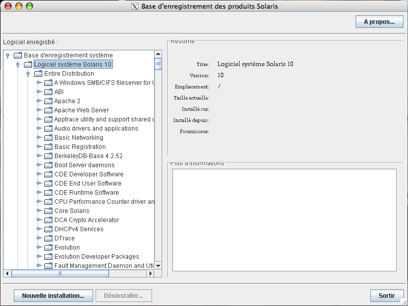

Gestion des packages Solaris
Contents
1 Introduction
Les packages sont comme sous toutes les distributions, un moyen simple d'installer un logiciel. Nous allons voir ici toutes les façons de gérer ces packages.
2 Localisations
Pour savoir ce qui est installé sur votre système, il suffit de regarder dans le fichier /var/sadm/install/contents :
more /var/sadm/install/contents
(output edited for brevity) /bin=./usr/bin s none SUNWcsr /dev d none 0755 root sys SUNWcsr SUNWcsd /dev/allkmem=../devices/pseudo/mm@0:allkmem s none SUNWcsd /dev/arp=../devices/pseudo/arp@0:arp s none SUNWcsd /etc/ftpd/ftpusers e ftpusers 0644 root sys 198 16387 1094222536 SUNWftpr /etc/passwd e passwd 0644 root sys 580 48298 1094222123 SUNWcsr
Pour trouver ou un logiciel est installé sur le système vous pouvez également faire comme ceci :
pkgchk -l -P showrev
Pathname: /usr/bin/showrev
Type: regular file
Expected mode: 0755
Expected owner: root
Expected group: sys
Expected file size (bytes): 29980
Expected sum(1) of contents: 57864
Expected last modification: Dec 14 06:17:58 AM 2004
Referenced by the following packages:
SUNWadmc
Current status: installed
Pathname: /usr/share/man/man1m/showrev.1m
Type: regular file
Expected mode: 0644
Expected owner: root
Expected group: root
Expected file size (bytes): 3507
Expected sum(1) of contents: 35841
Expected last modification: Dec 10 10:42:54 PM 2004
Referenced by the following packages:
SUNWman
Current status: installed3 Identification
Lorsque vous avez téléchargé un package et que vous voulez par exemple vérifier si c'est pour sparc ou x86, voici ce qu'il faut faire :
On vérifie que c'est bien un package :
file SUNWrsc.pkg
SUNWrsc.pkg: package datastream
Ensuite on affiche le head du package :
head SUNWrsc.pkg
# PaCkAgE DaTaStReAm SUNWrsc 1 3266 # end of header SUNW_PRODVERS=2.2.1 SUNW_PKGVERS=1.0 PKG=SUNWrsc NAME=Remote System Control DESC=Sun Remote System Control system software ARCH=sparc VENDOR=Sun Microsystems, Inc.
4 Les Outils
| Outils | Descriptions |
|---|---|
| pkgtrans | Transformer les packages d'un format à un autre |
| pkgadd | Installer un package du système |
| pkgrm | Supprimer un package du système |
| pkginfo | Affiche les informations sur un package |
| pkgchk | Vérifie l'état d'installation d'un package |
4.1 pkgtrans
Ceci va transformer le package système dans le format "data stream" :
| |
pkgtrans /var/tmp /tmp/SUNWrsc.pkg SUNWrsc |
Vous obtiendrez un pkg. Si vous souhaitez faire l'inverse :
| |
pkgtrans SUNWrsc.pkg . |
4.2 pkginfo
Voici un exemple :
pkginfo -l SUNWman
PKGINST: SUNWman
NAME: On-Line Manual Pages
CATEGORY: system
ARCH: sparc
VERSION: 43.0,REV=67.0
BASEDIR: /usr
VENDOR: Sun Microsystems, Inc.
DESC: System Reference Manual Pages
PSTAMP: 2004.09.01.17.00
INSTDATE: Sep 24 2004 12:32
HOTLINE: Please contact your local service provider
STATUS: completely installed
FILES: 11383 installed pathnames
8 shared pathnames
97 directories
119848 blocks used (approx)4.3 pkgadd
Pour installer un pacakge bien particuler, faites ceci :
pkgadd -d . SUNWvts
Processing package instance <SUNWvts> from </cdrom/sol_10_sparc_4/Solaris_10/ExtraValue/CoBundled/SunVTS_6.0/Packages> SunVTS Framework(sparc) 6.0,REV=2004.08.18.12.00 Copyright 2004 Sun Microsystems, Inc. All rights reserved. Use is subject to license terms. Using </opt> as the package base directory. ## Processing package information. ## Processing system information. ## Verifying package dependencies. ## Verifying disk space requirements. ## Checking for conflicts with packages already installed. ## Checking for setuid/setgid programs. This package contains scripts which will be executed with super-user permission during the process of installing this package. Do you want to continue with the installation of <SUNWvts> [y,n,?] y Installing SunVTS Framework as <SUNWvts> ## Installing part 1 of 1. 9213 blocks Installation of <SUNWvts> was successful.
Pour installer tous les packages au format data stream :
pkgadd -d /tmp/SUNWrsc.pkg all
Processing package instance <SUNWrsc> from </tmp/SUNWrsc.pkg> Remote System Control(sparc) 2.2.1,REV=2002.02.11 Copyright 2001 Sun Microsystems, Inc. All rights reserved. Using </> as the package base directory. ## Processing package information. ## Processing system information. 15 package pathnames are already properly installed. ## Verifying disk space requirements. ## Checking for conflicts with packages already installed. ## Checking for setuid/setgid programs. Installing Remote System Control as <SUNWrsc> ## Installing part 1 of 1. 10499 blocks Installation of <SUNWrsc> was successful.
Si le package se trouve sur un site web :
pkgadd -d http://instructor/packages/SUNWrsc.pkg all
## Downloading... ..............25%..............50%..............75%..............100% ## Download Complete Processing package instance <SUNWrsc> from <http://instructor/packages/SUNWrsc.pkg> Remote System Control(sparc) 2.2.1,REV=2002.02.11 Copyright 2001 Sun Microsystems, Inc. All rights reserved. Using </> as the package base directory. ## Processing package information. ## Processing system information. 15 package pathnames are already properly installed. ## Verifying disk space requirements. ## Checking for conflicts with packages already installed. ## Checking for setuid/setgid programs. Installing Remote System Control as <SUNWrsc> ## Installing part 1 of 1. 10499 blocks Installation of <SUNWrsc> was successful.
4.3.1 Spool
Le spool est là ou les packages vont (/var/spool/pkg). Si par exemple sur le CD de Sun, on veut installer un package et qu'il soit également copié dans le répertoire de spool, voici un exemple :
kgadd -d /cdrom/cdrom0/s0/Solaris_10/Product -s spool SUNWauda
Transferring <SUNWauda> package instance
Vérifions :
ls -al /var/spool/pkg
total 6 drwxrwxrwt 3 root bin 512 Oct 1 14:26 . drwxr-xr-x 12 root bin 512 Sep 30 20:03 .. drwxrwxr-x 5 root root 512 Oct 1 14:26 SUNWauda
Pour l'installer ensuite :
pkgadd SUNWauda
4.4 pkgchk
Cette commande permet de vérifer si un package est bien installé (path, checksum ...).
- Pour lister le contenu d'un package :
pkgchk -v SUNWladm
/usr /usr/sadm /usr/sadm/lib /usr/sadm/lib/localeadm /usr/sadm/lib/localeadm/Locale_config_S10.txt /usr/sadm/lib/localeadm/admin /usr/sbin /usr/sbin/localeadm
- Pour vérifier si le fichier à changé par rapport à son origine (dans le package) :
pkgchk -p /etc/shadow
ERROR: /etc/shadow
modtime <09/03/04 03:35:24 PM> expected <09/30/04 08:06:14 PM> actual
file size <296> expected <309> actual
file cksum <20180> expected <21288> actual- L'option -l liste les informations du contenu du package :
pkgchk -l -p /usr/bin/showrev
<dev> Pathname: /usr/bin/showrev Type: regular file Expected mode: 0755 Expected owner: root Expected group: sys Expected file size (bytes): 29656 Expected sum(1) of contents: 31261 Expected last modification: Sep 02 09:21:11 2004 Referenced by the following packages:
SUNWadmc
Current status: installed </dev>
4.5 pkgrm
Pour supprimer un package :
pkgrm SUNWapchr
The following package is currently installed:
SUNWapchr Apache Web Server (root)
(sparc) 11.10.0,REV=2004.08.20.02.37
Do you want to remove this package? [y,n,?,q] y
## Removing installed package instance <SUNWapchr>
## Verifying package dependencies.
WARNING:
The <SUNWapchu> package depends on the package
currently being removed.
WARNING:
The <SUNWapchd> package depends on the package
currently being removed.
WARNING:
The <SUNWipplr> package depends on the package
currently being removed.
WARNING:
The <SUNWserweb> package depends on the package
currently being removed.
Dependency checking failed.
Do you want to continue with the removal of this package [y,n,?,q] y
## Processing package information.
## Removing pathnames in class <initd>
/etc/rcS.d/K16apache
/etc/rc3.d/S50apache
/etc/rc2.d/K16apache
(output ommited for brevity)
/etc/apache/httpd.conf-example
/etc/apache/README.Solaris
/etc/apache <shared pathname not removed>
/etc <shared pathname not removed>
## Updating system information.
Removal of <SUNWapchr> was successful.4.5.1 Spool
Pour supprimer un package et le supprimer du spool :
pkgrm -s spool SUNWauda
The following package is currently spooled:
SUNWauda Audio Applications
(sparc) 11.10.0,REV=2004.09.03.08.15
Do you want to remove this package? [y,n,?,q] y
Removing spooled package instance <SUNWauda>4.6 pkgtrans
Pour transformer des packages en un package stream, rien de plus simple :
pkgtrans -s Product /var/tmp/stream.pkg SUNWzlib SUNWftpr SUNWftpu
Transferring <SUNWzlib> package instance Transferring <SUNWftpr> package instance Transferring <SUNWftpu> package instance <syntaxhighlight lang=text> On vérifie : file /var/tmp/stream.pkg Un head : head -5 /var/tmp/stream.pkg <syntaxhighlight lang=text> # PaCkAgE DaTaStReAm SUNWzlib 1 186 SUNWftpr 1 70 SUNWftpu 1 300 # end of header
Maintenant, à l'installation :
pkgadd -d /var/tmp/stream.pkg
The following packages are available:
1 SUNWftpr FTP Server, (Root)
(sparc) 11.10.0,REV=2004.12.11.01.30
2 SUNWftpu FTP Server, (Usr)
(sparc) 11.10.0,REV=2004.12.11.01.30
3 SUNWzlib The Zip compression library
(sparc) 11.10.0,REV=2004.12.10.05.25
Select package(s) you wish to process (or 'all' to process
all packages). (default: all) [?,??,q]: q4.7 prodreg
Ceci permet d'avoir une interface graphique pour gérer les packages comme à l'installation de Solaris :

{kind=link}
5 Emplacements des packages
Pour ne pas risquer d'habimer le système principale, les packages s'installent dans des endroits bien précis :
| Fichiers ou dossiers | Description |
|---|---|
| /var/sadm/install/contents | La liste de tous les packages du système |
| /opt/pkgname | Path de la plus part des packages installés |
| /opt/pkgname/bin ou /opt/bin | Binaires de la plus part des packages installés |
| /var/opt/pkgname ou /etc/opt/pkgname | Logs de la plus part des packages installés |